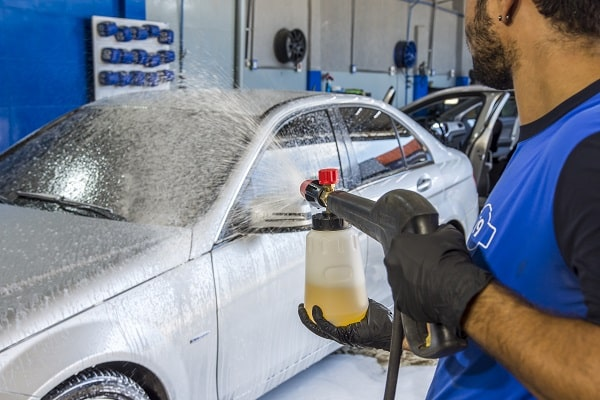
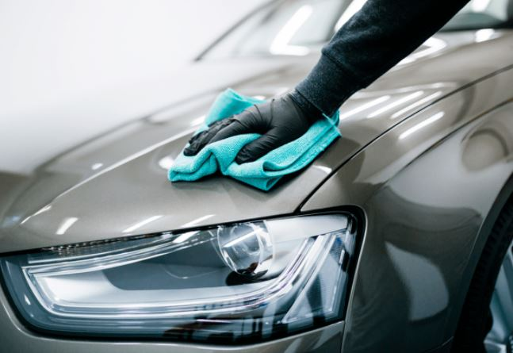
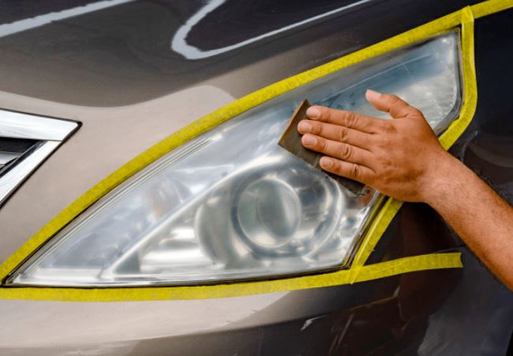
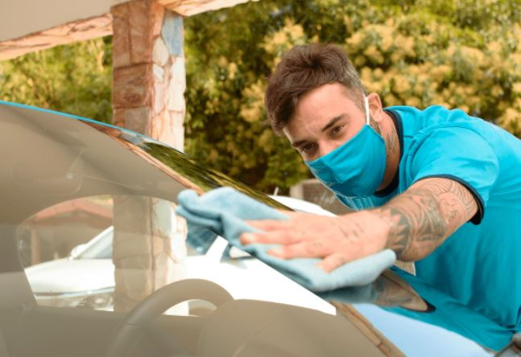
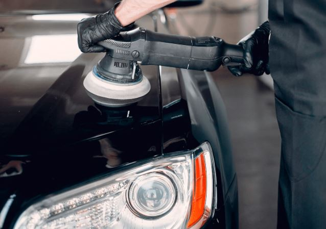
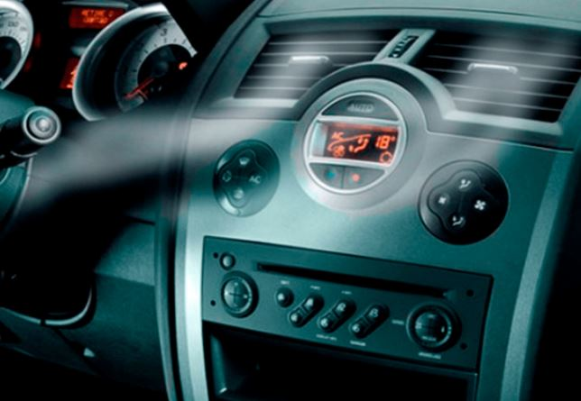
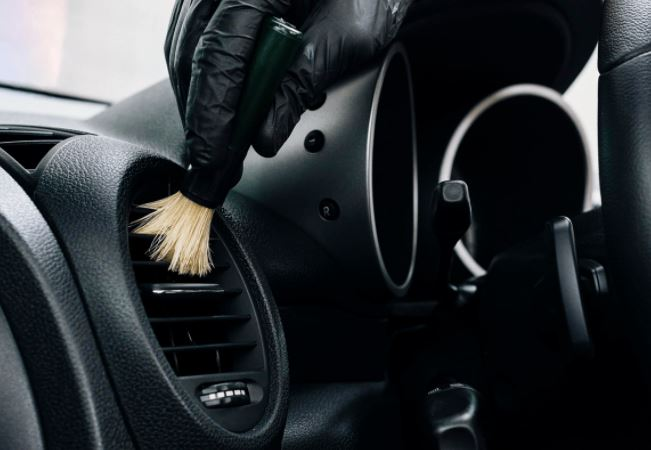
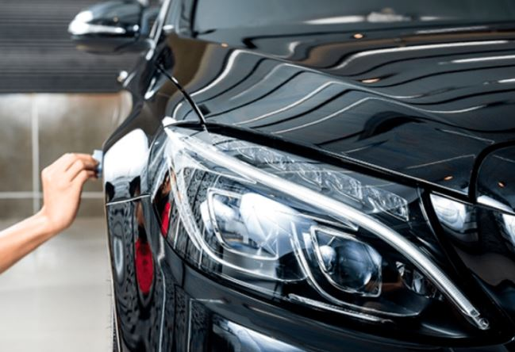

Conheça nossos serviços
-
Lavagem automotiva
Sim, a limpeza externa do veículo também é um serviço de estética automotiva. No entanto, ela vai muito além de água e sabão. Aqui, os produtos são mais tecnológicos e eficientes. Além disso, esse tipo de cuidado consegue evitar manchas e danos à pintura, já que o acúmulo de sujeira pode causar arranhões e deterioração das superfícies. Portanto, é recomendado que seja feita pelo menos uma vez por semana, se o veículo for usado diariamente. A Limpeza externa também inclui a limpeza do motor, onde previne que sujeiras prejudiquem o funcionamento do veículo. Por isso, ela costuma ser feita de modo artesanal, usando pincéis e produtos biodegradáveis tanto no motor, quanto no bloco e no alojamento.
-
Cera automotiva
O enceramento oferece brilho e, em alguns casos, uma boa proteção da pintura do veículo. As ceras atuam evitando que a sujeira se prenda ao carro, de forma que se torna mais difícil a pintura ser manchada ou sofrer outros danos permanentes. Por esse motivo, também acaba se tornando necessário lavar o carro com menos frequência. Para aplicar a cera no carro, é importante que o mesmo esteja limpo e seco, portanto é recomendado fazer uma lavagem antes do enceramento.
-
Polimento do farol
Além de melhorar o visual do veículo, o polimento dos faróis também garante maior visibilidade ao motorista. Isso porque esse serviço elimina o desbotamento e a aparência fosca que tende a aparecer nos faróis com o tempo. Como resultado, as luzes e lanternas voltam a iluminar de forma mais potente, garantindo mais visibilidade e segurança ao condutor e aos passageiros. Por essa razão, esse serviço é recomendado de forma periódica para evitar que sujeiras e arranhões fiquem acumulados por muito tempo. A chuva ácida é um fenômeno comum em grandes centros urbanos e ocorre quando a água da chuva se mistura com gases poluentes. Quando ela evapora nos vidros e lataria do veículo, o que sobra são os agentes contaminantes. Além de não serem eliminados na lavagem convencional, esses agentes deixam a pintura manchada, podendo até causar corrosão na lataria do carro. Com este serviço, é possível eliminar manchas e marcas decorrentes de chuva ácida, aumentando a vida útil da pintura e lataria.
-
Cristalização de vidros
Entre todos os serviços da estética automotiva, podemos dizer que a cristalização é um dos que garante maior segurança ao motorista. Isso porque ele consiste na impermeabilização do para-brisa do veículo, evitando que a chuva atrapalhe a direção. Dessa forma, mesmo em dias de chuva intensa, o condutor garante sua visibilidade. Esse serviço pode ser realizado em todos os vidros do veículo, já que também cria uma barreira de alta resistência contra a salinidade marinha, respingos de asfalto, poeira, insetos e outras sujeiras que podem aderir à superfície do vidro.
-
Espelhamento
O espelhamento é um serviço muito procurado pelos consumidores. Esta técnica é realizada para eliminar riscos do carro e deixar sua pintura mais brilhante. Ao mesmo tempo, o espelhamento pode proteger contra desgastes causados por sujeiras, sol, chuva, entre outros. Para isso, o veículo recebe uma camada de verniz, que possui uma durabilidade de 6 meses. Portanto, é importante fazer o serviço de forma periódica para que o resultado seja mantido.
-
Higienização de ar
Apesar de já ser bastante comum, este serviço também é muito importante na estética automotiva. Ele está diretamente ligado à segurança e bem-estar dos ocupantes do veículo, pois elimina ácaros, fungos, bactérias, vírus e poeira acumulados no ar-condicionado. Assim, é possível prevenir irritações respiratórias e alergias na pele e mucosas. Além disso, essa limpeza também ajuda a manter o equipamento funcionando, já que o acúmulo de sujeira e umidade podem causar a queima do ar-condicionado do carro.
-
Higienização interna
Na estética automotiva, a higienização interna atua removendo manchas e sujeiras impregnadas e difíceis de retirar do veículo. Além de deixá-lo mais limpo, a higienização aumenta a vida útil do veículo e dos acessórios internos. Porém, é preciso bastante cuidado, atenção e paciência para limpar o painel, volante, marcha, cintos de segurança, bancos e outros. Dessa forma, também é possível remover as bactérias, como as que ficam alojadas no interior do carro. Todos os cantinhos, frestas e frisos devem ser higienizados e, no fim, farão uma grande diferença no resultado. Além de limpar as superfícies, a higienização interna é capaz de cuidar da saúde dos ocupantes do veículo. Afinal, com as sujeiras, bactérias e fungos eliminados, a qualidade do ar dentro do carro melhora consideravelmente. Com os bancos de couro, a higienização merece atenção especial. O couro, por se tratar de um material natural, pode ressecar e desbotar com o passar do tempo. Por isso, é importante hidratar a superfície de forma periódica, a fim de manter o pH do couro equilibrado. Dessa forma, os bancos ganham um toque macio e diminui o rangido da superfície.
-
Vitrificação
Esse serviço é uma das grandes novidades da estética automotiva. Nele, uma camada líquida reveste a lataria, criando uma película para a pintura. Dessa forma, os poros do verniz se fecham e evitam o desgaste causado por poeira, chuva, arranhões e raios UV, por exemplo. Para isso, são utilizados produtos de alta performance que agem sobre toda a parte externa do veículo. Assim, a pintura da lataria ganha um brilho extra e mais tonalidade, deixando o veículo com um visual renovado e que durará por mais tempo.